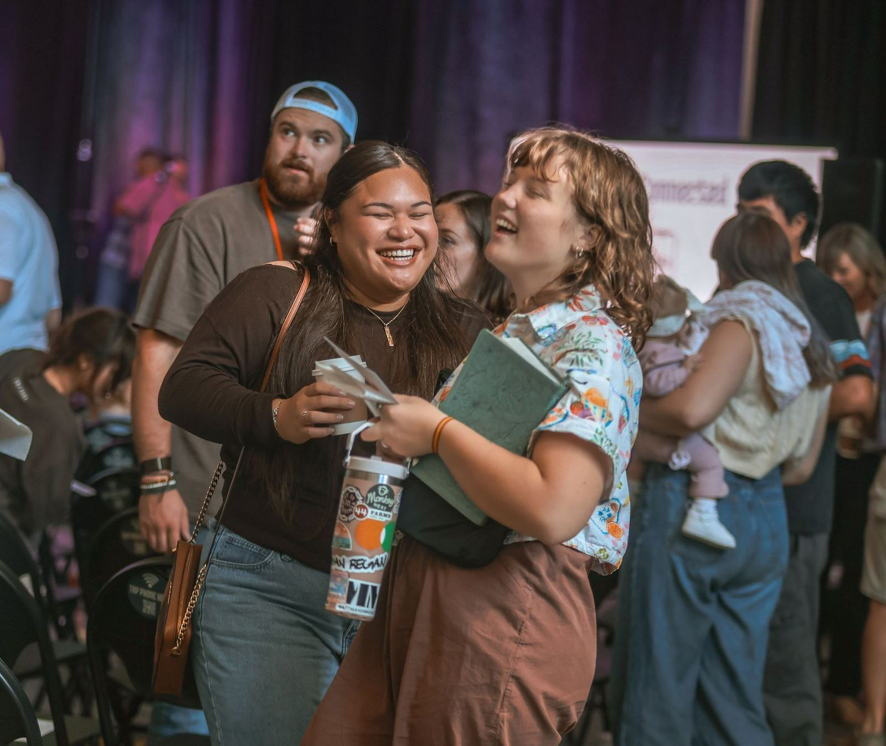

Messages
Watch a message. Decide for yourself.
Don't take our word for it.
The latest message. Straight from Sunday.
Every message comes straight from the Bible, taught so it makes sense whether you’ve been in church your whole life or this is your very first time. A new one goes up every week.
What others are watching.
Pick one and see what you think.

You can't get this from the couch.
Belong before you believe.
Sundays at 10am. Camacho Elementary, Leander.